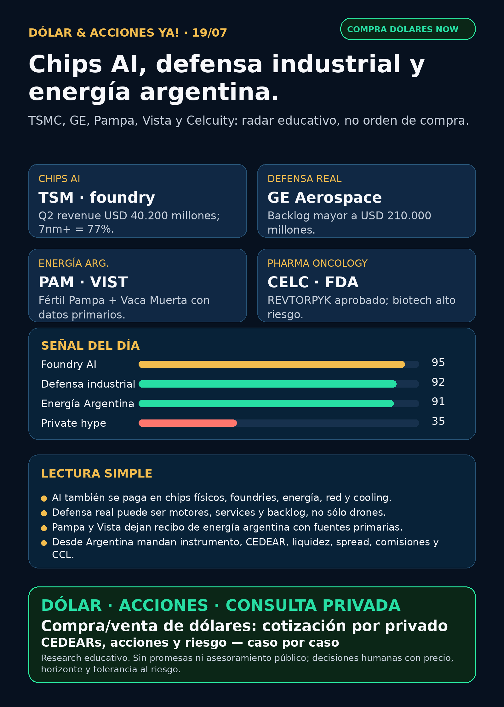

Chips AI, defensa industrial y energía argentina.
TSMC confirma el peaje de foundry; GE Aerospace muestra defensa real; Pampa/Vista sostienen energía local y Celcuity suma FDA en oncology.
Texto WhatsApp
Placa del día

Dólar & Acciones YA — 19/07
Fecha de edición: 2026-07-19. Research educativo para Argentina. No es recomendación personalizada de compra ni de venta.
Lectura simple del día
La lectura de hoy es ésta: AI sigue pagando peaje físico. No alcanza con mirar aplicaciones o software; hay que mirar foundries, chips avanzados, motores, energía, Vaca Muerta y aprobaciones regulatorias reales.
En criollo: una buena empresa no siempre es buena inversión al precio actual; y desde Argentina además tenés que separar acción global, CEDEAR, ADR, liquidez local, spread, comisiones y tipo de cambio MEP/CCL.
Contexto dólar público usado sólo como referencia educativa: BlueLytics marcó oficial vendedor ARS 1.502 y blue vendedor ARS 1.530 al 2026-07-17 19:45 -03. CriptoYa marcó MEP AL30 ARS 1.520,43 y CCL AL30 ARS 1.565,73 con timestamp 2026-07-17 16:59 -03; USDT ask ARS 1.577,78 al 2026-07-19 02:17 -03. Para operar de verdad se confirma en broker vivo.
Ordenado por valor educativo y fuerza de señal de radar, no por recomendación de compra.
Tesis central
La señal principal es que el radar se está ensanchando sin perder disciplina: TSMC confirma el cuello de botella de chips avanzados; GE Aerospace muestra defensa industrial real, con motores y backlog; Pampa/Vista sostienen energía argentina como tesis propia; y Celcuity aporta un catalyst biotech verificable por FDA.
La idea para el lector argentino: no perseguir tickers por moda. Traducir cada noticia a instrumento real, riesgo, precio, liquidez y horizonte.
Señales educativas del día
1) Semiconductores / foundry AI — TSMC (`TSM`)
- **Qué pasó:** TSMC reportó Q2 2026 por SEC 6-K / EX-99.1.
- **Dato clave:** revenue **USD 40.200 millones** (+33,7% YoY), net income **NT$706.560 millones** (+77,4% YoY), EPS **NT$27,25** (+77,4% YoY), gross margin **67,7%** y operating margin **60,3%**. Tecnologías de 7nm o más avanzadas representaron **77%** del wafer revenue: 2nm 3%, 3nm 30%, 5nm 33%, 7nm 11%. Guía Q3: revenue **USD 44.600 a 45.800 millones**.
- **Fuente primaria:** SEC exhibit: https://www.sec.gov/Archives/edgar/data/1046179/000104617926000451/a2q26e_withguidancexfinal.htm
- **Lectura en criollo:** TSMC es el peaje físico de AI: si los modelos quieren más compute, alguien tiene que fabricar los chips avanzados. El margen muestra poder, pero el riesgo geopolítico Taiwán/China no desaparece.
- **Accionable Argentina:** TSM es global; antes de ejecución local hay que verificar CEDEAR, liquidez, ratio, spread, CCL y tamaño dentro de cartera.
- **Estado:** señal fortalecida / en radar.
2) Defensa / aerospace industrial — GE Aerospace (`GE`)
- **Qué pasó:** GE Aerospace reportó Q2 2026 y subió guidance.
- **Dato clave:** orders **USD 16.500 millones** (+17%), revenue GAAP **USD 13.300 millones** (+21%), adjusted revenue **USD 12.600 millones** (+24%), free cash flow **USD 3.000 millones** (+43%) y backlog mayor a **USD 210.000 millones**. LEAP deliveries +41% en H1. También reportó wins de defensa/industrial: F404 para Turkish Aerospace HÜRJET, CT7 para UK MoD y GE426 para una plataforma colaborativa de la USAF.
- **Fuente primaria:** SEC exhibit: https://www.sec.gov/Archives/edgar/data/40545/000004054526000047/ge2q2026earningsrelease.htm
- **Lectura en criollo:** defensa no es sólo drones ni titulares de guerra. También son motores, installed base, mantenimiento, services y backlog. Es guerra física/industrial.
- **Accionable Argentina:** posible vía global/CEDEAR a verificar. Que la empresa sea de calidad no define punto de entrada.
- **Estado:** señal fortalecida / vigilar precio.
3) Energía Argentina / gas-to-products — Pampa Energía (`PAM` / `PAMP`)
- **Qué pasó:** Pampa aprobó la decisión final de inversión de Fértil Pampa y garantía del EPC.
- **Dato clave:** complejo de **6.000 toneladas/día** de urea granulada, equivalente a **2,1 millones de toneladas/año**, con inversión aproximada de **USD 2.700 millones**. Obra estimada: **41 meses**. EPC turnkey con Tecnimont y SACDE. RIGI/REPIE son condiciones esenciales.
- **Fuente primaria:** SEC 6-K exhibit: https://www.sec.gov/Archives/edgar/data/1469395/000129281426003804/ex99-1.htm
- **Lectura en criollo:** gas argentino convertido en fertilizante es energía + industria + sustitución/importación/exportación. No todo radar de energía tiene que venir de utilities de Estados Unidos.
- **Accionable Argentina:** PAMP local / PAM ADR; revisar precio, liquidez, spread, regulación, RIGI/REPIE y exposición previa.
- **Estado:** señal fortalecida / en radar.
4) Energía Argentina / Vaca Muerta — Vista (`VIST`)
- **Qué pasó:** Vista publicó Q2 2026 y presentación.
- **Dato clave:** producción Q2 **156.061 boe/d** (+32% YoY), oil production **135.427 bbl/d**, total revenues **USD 1.154 millones** (+89% YoY), adjusted EBITDA margin **70%**, net income **USD 321,7 millones** (+37% YoY) y capex **USD 466,8 millones**.
- **Fuente primaria:** SEC exhibit: https://www.sec.gov/Archives/edgar/data/1762506/000119312526306139/d151775dex1.htm
- **Lectura en criollo:** Vista es recibo operativo de Vaca Muerta: producción, revenue, margen y capex. Complementa a Pampa: una es gas-to-products; la otra es producción shale.
- **Accionable Argentina/global:** vía global/local a verificar por broker; mirar CCL, spread y volatilidad crudo/regulación.
- **Estado:** señal fortalecida / vigilar.
5) Pharma / biotech oncology — Celcuity (`CELC`) REVTORPYK / gedatolisib
- **Qué pasó:** FDA aprobó REVTORPYK™ (gedatolisib) para HR+/HER2-, PIK3CA wild-type locally advanced/metastatic breast cancer tras progresión luego de endocrine therapy.
- **Dato clave:** Celcuity informó que VIKTORIA-1 redujo riesgo de progresión o muerte **76%** en combinación con palbociclib + fulvestrant y **67%** en combinación con fulvestrant vs fulvestrant. openFDA confirmó NDA219908, sponsor CELCUITY INC., ORIG 1, estado aprobado, fecha **2026-07-14**.
- **Fuente company/SEC:** https://www.sec.gov/Archives/edgar/data/1603454/000149315226033223/ex99-1.htm
- **Fuente FDA:** https://www.accessdata.fda.gov/drugsatfda_docs/appletter/2026/219908Orig1s000ltr.pdf
- **Lectura en criollo:** es catalyst real, pero biotech no es big pharma defensiva. Puede moverse fuerte por lanzamiento comercial, caja, competencia, label y ensayos.
- **Accionable Argentina:** probablemente sin CEDEAR líquido; research global/USA, no candidato local simple.
- **Estado:** señal fortalecida / alto riesgo.
Watchlist base — seguimiento rápido
- RKLB: revisado. Sin filing material nuevo post-Iridium. RSS trae precio/analistas/SpaceX; queda ruido si no hay primaria.
- NVDA: señal estructural de Japón/Noetra/140 MW sigue vigente, pero no se repite como novedad principal de hoy.
- PLTR: Form 4: Alexander D. Moore vendió **16.000 acciones** vía 10b5-1 por aprox. **USD 2,145 millones**, VWAP **USD 134,05**. No es señal operativa; vigilar valuación/insider selling.
- TSM: top señal del día por Q2/guidance; señal fortalecida.
- MU: revisado; HBM/memory sigue en radar estructural, sin primaria fresca superior.
- GOOGL/GOOG: revisado; RSS sobre 1GW/grid-friendly data centers requiere fuente primaria Google antes de headline.
- AAPL / AVGO: acuerdo custom ASIC Apple-Broadcom hasta 2031 sigue vigente desde SEC previo; sin nueva primaria superior.
- HOOD: CFO Shiv Verma vendió **3.982 acciones** vía 10b5-1 por aprox. **USD 456.800**, VWAP **USD 114,71**. No cambia tesis; sigue radar por broker/crypto rails/agentic accounts.
- TSLA: robotaxi/NHTSA aparece en RSS; sin fuente primaria NHTSA usable. Auditoría, no claim público.
- ASML: sin filing nuevo desde Q2; radar alto por High-NA, no all-in.
- Gold / GLD / GOLD / B: instrumento ambiguo; bloqueado hasta confirmar si es ETF, minera, oro físico u otra cosa.
- RVI: sponsor sales verificadas por Form 4; wrapper, no operating company.
- SNDK / CBRS: CBRS tiene RSS post-IPO/pullback, sin SEC nuevo; mantener radar alto por OpenAI/AWS/customer concentration, no headline.
Energía y AI power
- **Argentina:** PAM/PAMP y VIST son las dos señales locales fuertes. CEPU anunció calendario Q2: resultados 2026-08-11 y call 2026-08-12. Fuente SEC: https://www.sec.gov/Archives/edgar/data/1717161/000129281426003802/cepu20260717_6k.htm
- **YPF/TGS/CEPU:** revisados sin señal primaria fresca superior esta noche.
- **AI factories / MW:** la señal previa de NVIDIA/Japón/Noetra de **140 MW** sigue reforzando que AI infra se mide también en energía, cooling y red.
- **Transformadores / power hardware:** Hitachi Energy, Siemens Energy (ENR.DE), GE Vernova (GEV), HD Hyundai Electric, Hyosung/HICO, Virginia Transformer y Delta Star revisados. Hubo RSS, pero sin primaria fresca fuerte para headline. Mantener lane; no vender Corea/OTC como fácil para Argentina.
- **Utilities globales:** VST/CEG revisados; sin señal nueva superior a las ya indexadas.
Pharma / salud
- CELC: señal principal del día en biotech oncology por FDA + SEC + openFDA.
- MRK: LIPFENDRA/enlicitide aprobado 2026-07-16 sigue como señal fuerte cardiometabólica, no GLP-1.
- NVO: Wegovy oral Europa sigue vigente; sin novedad FDA nueva de hoy.
- LLY: orforglipron/retatrutide revisado; sin catalyst fresco verificado por FDA/openFDA esta corrida. Evitar titulares reciclados.
- PFE/MRK oncology y AZN: revisados sin primaria fresca superior esta noche.
Radar amplio fuera de watchlist
- **Defensa / guerra física:** GE es la señal fuerte. AVAV revisado: releases recientes sobre Puma systems Germany LARUS, Titan/JIATF-401 y Domestic Shield siguen interesantes, pero para headline fuerte conviene auditar DoD/cliente o release individual estable. RTX, LMT, NOC, GD, HWM, KTOS, BA, ITA/XAR revisados sin señal primaria fresca superior.
- **Autonomous mobility / physical AI:** TSLA robotaxi/NHTSA queda audit-only; no publicar sin fuente primaria. NVDA Japón/physical AI sigue como señal estructural.
- **Space / orbital AI:** SPCX/SpaceX lockup/selloff aparece en RSS, pero sin SEC/fuente primaria nueva usable; no elevar como hecho. RKLB revisado sin filing nuevo.
- **Private AI infra:** CBRS/Cerebras revisado; sin SEC nuevo. Mantener radar por OpenAI/AWS/customer concentration.
- **Crypto gobernado / rails:** sin señal nueva superior a Robinhood Chain/Stock Tokens/Agentic Accounts ya indexado. No hay token trade.
- **Commodities/oro:** bloqueado por ambigüedad Gold/GLD/GOLD/B.
Private markets / instrumentos empaquetados
- **RVI / Robinhood Ventures Fund I:** Form 4 verificado: Robinhood Markets vendió **19.776 acciones** el 14–15/7 por aprox. **USD 563.500**, VWAP **USD 28,49**, quedando **13.265.541 acciones**. Fuente SEC XML: https://www.sec.gov/Archives/edgar/data/2085091/000178387926000095/wk-form4_1784233934.xml
- **Lectura:** esto es riesgo de instrumento/liquidez/float. RVI no es operating company ni acceso limpio a SpaceX/OpenAI.
- **DXYZ / Destiny Tech100:** narrativa de exposición a SpaceX/OpenAI/Databricks vuelve en RSS; sin filing/NAV/premium fresco verificado.
- **SPCX / SpaceX:** auditoría, no claim público nuevo.
- **ARKVX / AGIX / XOVR / VCX / FAPMI / Forge:** sin evidencia fresca verificable.
Capa Argentina — cómo leer esto desde acá
- **CEDEAR:** no es igual a la acción original. Tiene ratio, liquidez local, spread, comisiones y CCL implícito.
- **MEP/CCL:** el tipo de cambio implícito puede mover tu resultado aunque el ticker afuera no cambie.
- **Buena empresa ≠ buen precio:** TSMC, GE, Pampa, Vista o Celcuity pueden tener señales reales y aun así requerir precio de entrada, horizonte, riesgo y tamaño.
- **Proxy imperfecto:** una energética argentina, una foundry de Taiwán, una biotech USA y un motor aeroespacial no tienen el mismo riesgo.
- **Cuenta USA/global:** puede dar acceso más directo y liquidez, pero suma fiscalidad/compliance y riesgo de mercado.
Red flags / hype para ignorar hoy
- “TSMC sube = comprar sin mirar precio”: no. Foundry moat fuerte, pero geopolítica y valuación importan.
- “Defensa es sólo drones”: no. GE muestra motores, services y backlog como defensa industrial.
- “FDA aprobó algo = comprar biotech”: no. En biotech importan caja, lanzamiento, competencia, label y volatilidad.
- “RVI/DXYZ/VCX son SpaceX/OpenAI directo”: no sin NAV, holdings, premium, volumen y restricciones.
- “Robotaxi/FSD resuelto”: no sin fuente regulatoria primaria.
- “Gold/GLD/GOLD/B”: bloqueado hasta confirmar instrumento exacto.
Qué mirar después
1. TSMC: margen, 2nm/3nm ramp, capex, China/Taiwán y demanda hyperscaler.
2. GE Aerospace: backlog, servicios, supply chain, engine durability y precio/valuación.
3. Pampa/Fértil Pampa: RIGI/REPIE, ejecución EPC, financiación, gas y plazos.
4. Vista/Vaca Muerta: producción, capex, realized oil price, regulación y CCL.
5. Celcuity: lanzamiento comercial, cash runway, competencia y próximos datos.
6. Argentina: CEDEAR/acceso local, spread, liquidez, MEP/CCL y tamaño de posición antes de cualquier análisis operativo.
Recibo de cobertura
Watchlist base revisada; energéticas argentinas revisadas; transformadores/power hardware revisado; pharma/GLP-1/oncology revisado; defensa/aeroespacial revisado; space/private wrappers revisado; autonomía/physical AI revisado; crypto gobernado revisado. Text-only vigente: no se generó voz ni media de audio.
Servicio privado
Dólar · Acciones · Consulta privada. Si querés comprar o vender dólares, entender CEDEARs, armar una cartera o revisar riesgo, se ve por privado caso por caso. Cotización de dólares sujeta a confirmación al momento de operar.
Disclaimer
Esto es research educativo para decisión humana. No es asesoramiento financiero personalizado ni recomendación de compra/venta.